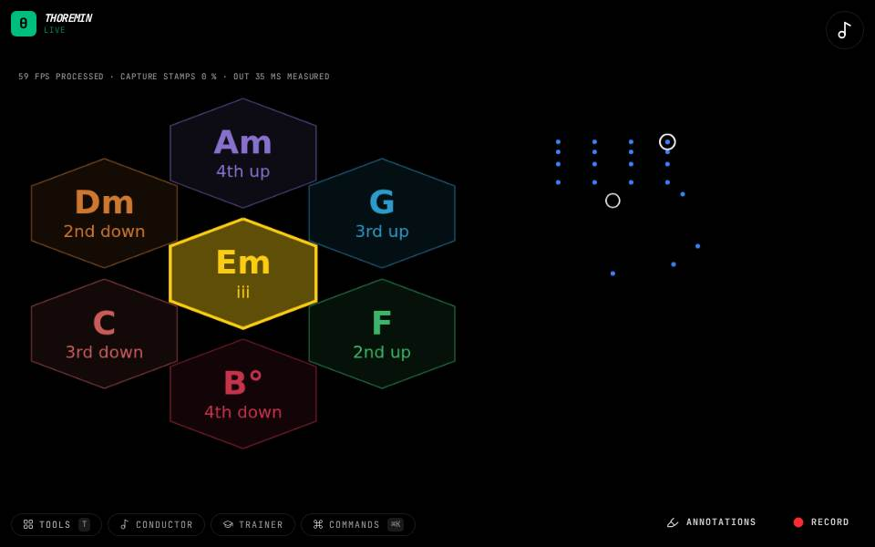

Instruments › Chords and harmony
Chord Wheel

What to do
- Hold a chord with your left hand.
- Push the hand toward one of the moves around the wheel and hold.
- The chord changes to that move, with the voices led smoothly.
A wheel of the key's moves from the chord you are on.
How it works
This page is a short first version; the chord instruments are explained in full in the harmony pages of this guide.
Its settings: Chord wheel. Every knob: the manual.